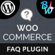
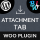
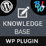
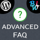
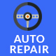
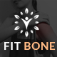
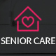
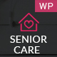
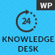
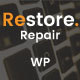

Breaking News Addon For Visual Composer
- Plugin Version: 1.0.1
- Plugin Create Date: 06/12/2013
- Plugin Last Update: 06/03/2018
- Web Site: http://bluewindlab.net
- Email Us: hkhan.cse@gmail.com
- Developed By: bluewindlab
- Skype: bluewindlab
If you like this plugin, please spare a minute to rate it.
https://codecanyon.net/item/breaking-news-addon-for-visual-composer/15317185
If you want any support, Please feel free to contact me via my profile page
https://codecanyon.net/user/xenioushk.
Plugin Overview
Easy & Powerful breaking news Addon for Visual Composer that allows you to create animated breaking news ticker for your site within few minutes. Addon comes 11 predefined themes with custom theme builder and 16 smooth news ticker animation feature. So, you can create eye catching breaking news ticker for your site requirements.
Addon also gives you the front end editing feature too. Here goes the full feature lists of Addon-
- Display breaking news any where of site.
- Easy to use and flexible customization feature.
- Custom breaking news block for visual composer.
- 16 smooth news ticker animation.
- 11 predefined theme with custom theme builder.
- 7 custom ticker navigation button.
- RTL supported news ticker.
- Responsive ticker layout.
- Custom ticker filter.
- Ready for localization.
- Front end editing with Visual Composer.
- Quick installation and super easy to use.
- Extensive Documentation.
- 6 Months premium support & Free Lifetime updates.
Requirements
You need at least WordPress version 4.8+ installed for this plugin to work properly.
It is strongly recommended that you always use the latest stable version of WordPress to ensure all known bugs and security issues are fixed.
Other requirements:
You need to install Visual Composer & BWL Breaking News Manager to use "Breaking News Addon For Visual Composer".
- PHP version 5.4.45 or greater.
- MySQL version 5.5.51 or greater.
Plugin Installation
To install a plugin, you must first upload the plugin files and then activate the theme. The plugin files can be uploaded in two ways:
- FTP Upload: Using your FTP client, upload the non-zipped plugin folder into the /wp-content/plugins/ folder on your server.
- WordPress Upload: Navigate to Plugins >> Add New >> Upload Plugin. Go to browse, and select the zipped theme folder. Hit "Install Now" and the theme will be uploaded and installed.
Step 01: Go to WP admin dashboard and click on Plugins >> Add New.

Step 02: Click on Upload Plugin and upload the "bwl-advanced-faq-manager.zip" file.
Step 03: Once plugin successfully uploaded in your server you will get an message to activate it. Click on Activate Plugin Link and plugin will be ready to use . After activating plugin, you will redirect in plugins section of wp-admin panel and display new installed plugins information in there.
Step 04: Now you are ready to use Breaking News Addon For Visual Composer! In left sidebar menu you will see a new section like following image.

How To Operate Plugin
Once installation has been completed successfully, Addon automatically add a new menu( BWL Breaking News ) in visual composer "Content" section.
- Breaking News Addon Blocks:
-
01. General Block:
-
02.1. Filter Block:
-
02.2. Category Filter Block:
-
>03. Theme Block:

-
04. Custom Theme Block:
-
05. Navigation Block:

-
06.1. Animation Block:

-
06.2. Animation interval Block:
-
07. Settings Block:

-
08. Front end editor:
Video Tutorials
Translate Plugin Layouts
"Breaking News Addon For Visual Composer" offers cool translation feature. So, you can easily add this plugin any kind of website. Check following steps for translate "Breaking News Addon For Visual Composer" plugin.
- Inside of plugin "lang" folder you will get a file named "default.po" file. To edit this file you need to install "poedit" software in your computer.
- Our Plugin text-domain is 'bnm_vc'
- If you are doing "localization of a plugin" for the first time, then I recommend you to check this video. http://www.youtube.com/watch?v=aGN-hbMCPMg
- Suppose you want to translate plugin in to "German" language.
So,".po" file name will be
"bnm_vc-de_DE.po". That's all. - For country code check - http://www.gnu.org/savannah-checkouts/gnu/gettext/manual/html_node/Country-Codes.html#Country-Codes
- For Language code check - http://www.gnu.org/savannah-checkouts/gnu/gettext/manual/html_node/Usual-Language-Codes.html#Usual-Language-Codes
FAQ/Troubleshoot
Ques: Does plugin work with any theme?
Upgrade Notes
Please take a backup before update all files and folder.
Upgrading from 1.0.0 to 1.0.1
Replace all files and directories in your "breaking-news-addon-for-visual-composer" folder.
Version - 1.0.0
- Initial release
Change Log
07, March, 2018 - v 1.0.1
- Fixed VC Notice & Improved Plugin Code.
- Update Language File.
- Improved Documentation.
13, March, 2016 - v 1.0
- Initial release
Sources and Credits
- - Ideas & Coded By Md Mahbub Alam Khan
- - Visual Composer
- - BWL Breaking News Manager
Our WordPress Plugins:
-  WooCommerce Product FAQ Manager
-  Attachment Tab For Woocommerce
-  BWL Knowledge Base Manager
-  BWL Advanced FAQ Manager
- BWL Post To Breaking News Manager
- BWL Pro Voting Manager
- BWL Poll Manager
Our Templates:
- Cobbler Master - Shoe Repair and Leather Accessories Service Center
- Repair Geek - Laptop And Computer Fixing Service Center HTML5 Template
- Generosity - Charity, Fundraising & Non-Profit HTML5 Template
-  Auto Repair - Maintenance and Mechanic Center HTML5 Template
- Bicycle Fix - Bicycle Repair, Maintenance and Tune-Ups Shop HTML5 Template
-  Fit Bone - Physiotherapy and Massage Therapy Center
- Mind Trainer - Psychology and Counseling Center HTML5 Template
-  Senior Care - Senior Citizens & Elders Support HTML5 Template
- Greenlife - Nature & Environmental Non-Profit HTML5 Template
- Knowledge Desk - Responsive Knowledgebase HTML5 Template
Our WordPress Themes:
-  Senior Care - Elder Citizen Support WordPress Theme
-  Knowledgedesk - Knowledge Base WordPress Theme
- Wish - Charity WordPress Theme
-  Restore - Computer, Mobile & Digital Repair Service WordPress Theme
- Greenlife - Nature & Environmental WP Theme
- Appeal – Fully Functional Petition WordPress Theme